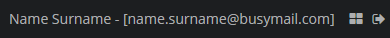

3.5.1.6. æ ¹ç•Œé�¢
æ ¹ç•Œé�¢æ˜¯ä¸€ä¸ªé€šç”¨ UI ç•Œé�¢ï¼Œç›´æ�¥å±•ç¤ºåœ¨ web æµ�è§ˆå™¨çš„æ ‡ç¾é¡µä¸ã€‚有两ç§�ç±»å�‹çš„è¿™ç§�ç•Œé�¢ï¼šç™»å½•ç•Œé�¢å’Œä¸»ç•Œé�¢ã€‚其它的组件ä¸ï¼Œä»»ä½•æ ¹ç•Œé�¢éƒ½å�¯ä»¥åŒ…å�« WorkArea ç»„ä»¶ï¼Œè¿™æ ·ä½¿å¾—å�¯ä»¥åœ¨å†…éƒ¨çš„æ ‡ç¾é¡µä¸æ‰“开其它的应用程åº�ç•Œé�¢ã€‚如æ�œæ ¹ç•Œé�¢ä¸�包å�« WorkArea，应用程åº�ç•Œé�¢å�ªèƒ½ä»¥ DIALOG 模å¼�打开。
- 登录界�
-
登录界�是在用户登录之�展示的界�。�以通过扩展框��供的登录界�或者创建全新的登录界�对该界�进行自定义。
如æ�œè¦�扩展已有的界é�¢ï¼Œåœ¨ Studio ç•Œé�¢åˆ›å»ºå�‘导ä¸ä½¿ç”¨ Login screen 模æ�¿ã€‚Studio ä¼šå¸®åŠ©åˆ›å»ºä¸€ä¸ªæ‰©å±•äº†æ ‡å‡†ç™»å½•ç•Œé�¢çš„ç•Œé�¢ã€‚该界é�¢ä¼šæ›¿ä»£æ ‡å‡†çš„登录界é�¢ï¼Œå› 为它在
@UiController注解ä¸ä½¿ç”¨äº†ç›¸å�Œçš„loginæ ‡è¯†ç¬¦ã€‚å¦‚æ�œæƒ³ä»�头创建一个新的界é�¢ï¼Œå�¯ä»¥ä½¿ç”¨ Blank screen 模æ�¿ã€‚一个æ��简的登录界é�¢æº�ç �å·®ä¸�å¤šæ˜¯è¿™æ ·ï¼š
my-login-screen.xml<window xmlns="http://schemas.haulmont.com/cuba/screen/window.xsd" caption="Login" messagesPack="com.company.sample.web"> <layout> <label value="Hello World"/> <button id="loginBtn" caption="Login"/> </layout> </window>MyLoginScreen.javapackage com.company.sample.web; import com.haulmont.cuba.gui.Route; import com.haulmont.cuba.gui.components.Button; import com.haulmont.cuba.gui.screen.*; import com.haulmont.cuba.security.auth.LoginPasswordCredentials; import com.haulmont.cuba.web.App; @UiController("myLogin") @UiDescriptor("my-login-screen.xml") @Route(path = "login", root = true) public class MyLoginScreen extends Screen { @Subscribe("loginBtn") private void onLoginBtnClick(Button.ClickEvent event) { App.getInstance().getConnection().login( new LoginPasswordCredentials("admin", "admin")); } }为了使用这个界�替代系统默认的界�，需�在
web-app.properties文件ä¸å°†cuba.web.loginScreenIdé…�置项设置为该界é�¢çš„ id。cuba.web.loginScreenId = myLogin当然，也å�¯ä»¥ç›´æ�¥å°†æ–°ç•Œé�¢çš„ id 设置为
login，就�需�修改这个�置了。
- 主界�
-
主界é�¢æ˜¯ç”¨æˆ·ç™»å½•ä¹‹å��看到的应用程åº�çš„æ ¹ç•Œé�¢ã€‚框æ�¶æ��供的带有侧边è�œå�•çš„æ ‡å‡†ä¸»ç•Œé�¢ä½¿ç”¨
main作为 id。Studio 有一些创建自定义主界�的模�，这些模�都使用相�的
MainScreen类作为�制器的基类。-
Main screen with side menu åˆ›å»ºä¸€ä¸ªæ ‡å‡†ä¸»ç•Œé�¢çš„扩展，使用
mainid。 -
Main screen with responsive side menu 创建一个类似的界é�¢ï¼Œä½†æ˜¯ä¾§è¾¹è�œå�•æ˜¯å“�应å¼�的，能在窄的显示ç�¯å¢ƒä¸è‡ªåŠ¨æ”¶èµ·ã€‚该界é�¢ä¼šå¸¦æœ‰è‡ªå·±ç”Ÿæˆ�çš„ idï¼Œå› æ¤ï¼Œå¿…须在
web-app.properties里�进行注册：cuba.web.mainScreenId = respSideMenuMainScreen -
Main screen with top menu 创建一个带有顶部è�œå�•æ �çš„ç•Œé�¢ï¼Œå¹¶ä¸”能在左侧显示 文件夹é�¢æ�¿ã€‚该界é�¢ä¼šå¸¦æœ‰è‡ªå·±ç”Ÿæˆ�çš„ idï¼Œå› æ¤ï¼Œå¿…须在
web-app.properties里�进行注册：cuba.web.mainScreenId = topMenuMainScreen
é™¤äº†æ ‡å‡† UI 组件之外，下é�¢è¿™äº›ç‰¹æ®Šçš„组件也å�¯ä»¥ç”¨åœ¨ä¸»ç•Œé�¢ï¼š
-
SideMenu- 应用程åº�è�œå�•ï¼Œä»¥å�‚ç›´æ ‘çš„å½¢åŠ¿å±•ç¤ºã€‚ -
AppMenu– 应用程åº�è�œå�•æ �。 -
AppWorkArea– 工作区，如�需�以THIS_TAB�NEW_TAB和NEW_WINDOW模�打开界�，则需�该组件。 -
FoldersPane– 应用程�和�索文件夹的��。 -
UserIndicator– 显示当�用户的�件，也包括选择替代用户的功能。使用
setUserNameFormatter()方法å�¯ä»¥è®¾ç½®ä¸�å�Œäº�Userå®�例å��称的用户å��称展示：userIndicator.setUserNameFormatter(value -> value.getName() + " - [" + value.getEmail() + "]"); -
NewWindowButton– 在å�•ç‹¬çš„æµ�è§ˆå™¨æ ‡ç¾é¡µæ‰“开新主界é�¢çš„按钮。 -
UserActionsButton– 如�用户会�没有认�，显示登录界�的链�。�则，显示一个��：用户设置界�的链�和登出�作。 -
LogoutButton– 应用程�登出按钮。 -
TimeZoneIndicator– 显示当å‰�ç”¨æˆ·æ—¶åŒºçš„æ ‡ç¾ã€‚ -
FtsField– 全文�索�件。
下列应用程��性�能影�主界�：
-
cuba.web.appWindowMode – 设置主窗å�£çš„默认模å¼�ï¼šæ ‡ç¾é¡µå¼�的还是å�•ç‹¬ç•Œé�¢å¼�（
TABBED或SINGLE）。用户�以使用UserActionsButton�供的 Settings - 设置 界�进行修改。 -
cuba.web.maxTabCount – 当主界é�¢åœ¨æ ‡ç¾é¡µå¼�时，使用该å±�æ€§è®¾ç½®ç”¨æˆ·èƒ½æ‰“å¼€çš„æ ‡ç¾é¡µæœ€å¤šä¸ªæ•°ã€‚默认值为 7。
-
cuba.web.foldersPaneEnabled - 为使用 Main screen with top menu 模�创建的界��用显示文件夹��。
-
cuba.web.defaultScreenId - 设置主窗�自动打开的默认界�。
-
cuba.web.defaultScreenCanBeClosed - 定义用户是å�¦å�¯ä»¥å…³é—默认界é�¢ã€‚
-